AME state – self-similar geomagic representations
update: 2026-10-10 by W. Bruzda
The material presented on this webpage grew out of my discussions with ChatGPT (GPT-6 Astra Pro) and is a direct follow-up to the geomagic construction presented here. I have decided to keep this material out of the original paper for two reasons. First, I do not want to obscure its main message. Second, my own contribution was limited to asking questions and guiding the model towards the simplest possible construction. I therefore do not regard this material as suitable for publication as a conventional research paper.
Above all, this note is a way to indulge my childhood obsession with fractals. See also this repository.
This is certainly not the end of the story... :)
A small puzzle can contain smaller copies of another puzzle. Repeating this one rule produces increasingly intricate pictures, yet their quantum meaning stays exact: at depth $n$ they describe real absolutely maximally entangled states of four systems, each with $6^n$ levels. Every row, every column and both main diagonals still assemble into the same complete figure.
The starting point is the real AME$(4,6)$ state and its geomagic representation in the companion manuscript [1]. Here the same signed data are placed in rectangles so that the construction can repeat by genuine similarities of the plane. There are two families to explore: the ordinary tensor powers of the seed, and a family obtained by a particularly simple conditional change of signs. Their pictures have exactly the same occupied regions.
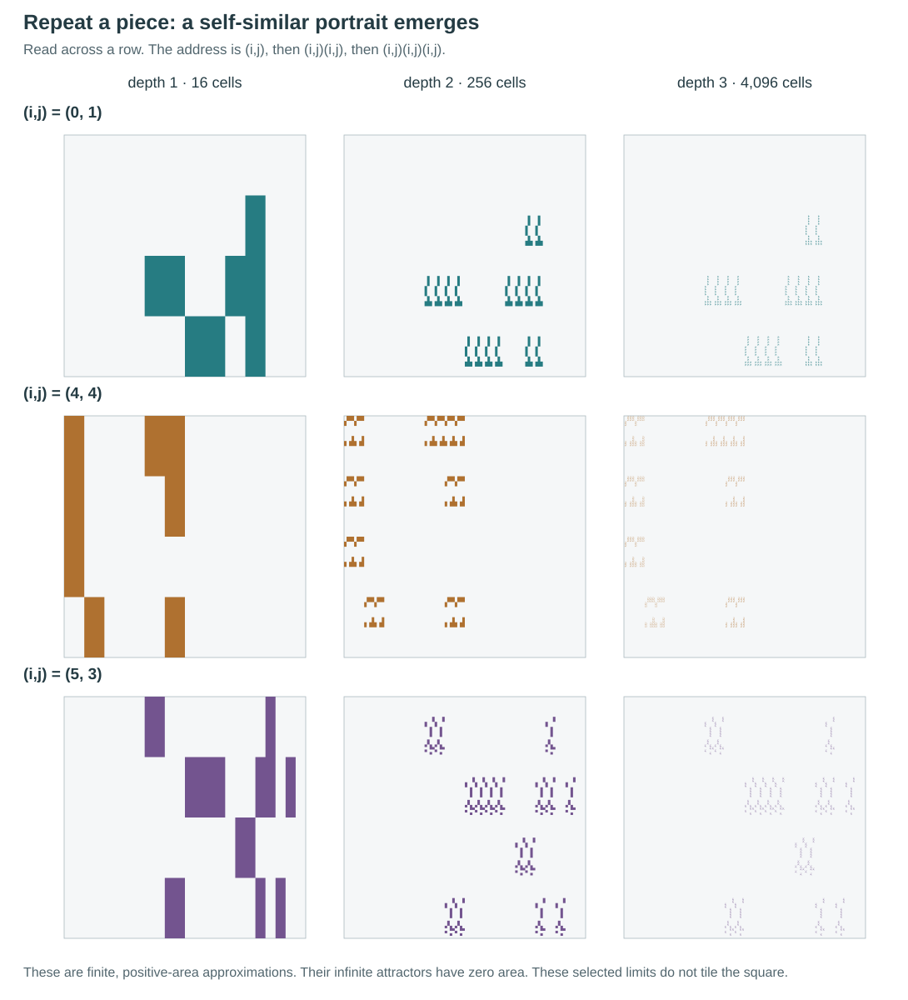
What “fractal AME” means here. Each finite depth gives a finite-dimensional AME state and a finite geomagic puzzle. Repeating an address forever gives a geometric fractal of zero area. We do not define an infinite-dimensional AME state by taking that geometric limit.
1. the quantum state and the puzzle
An AME$(4,d)$ state has four parties, each with $d$ possible basis labels. It is absolutely maximally entangled: whichever two parties are retained, their reduced state is the maximally mixed state $\mathbb I_{d^2}/d^2$. No particular pair is preferred.
For a four-index tensor $T$, collect two indices into a row label and the other two into a column label. There are three essentially different ways to do this: $AB|CD$, $AC|BD$ and $AD|BC$. If the resulting $d^2\times d^2$ matrices are all unitary, then
is an AME state. Such a tensor is called two-unitary. Here all coefficients are real, so its three matrices are orthogonal. We write $T^{\rm g}$ for the geometric seed throughout: $|\psi_{\rm g}\rangle=T^{\rm g}/6$.
A geomagic square replaces numbers in a magic square by shapes. Its entries are distinct pieces. Each row, column and main diagonal must assemble into the same target. In this construction the pieces already share a coordinate frame: simply superimpose the occupied regions, keeping every component in its prescribed position. A piece may have several disconnected components. The complete collection at fixed relative positions counts as one piece.
The geometry represents squared magnitudes. Labels identify coefficients, and signs complete the real quantum state. Thus a successful tiling and an AME state are related but separate mathematical requirements. The tiling does not by itself establish the cancellations needed for orthogonality.
| depth $n$ | local dimension $d=6^n$ | pieces $d^2$ | pieces in one line | atoms in one piece |
|---|---|---|---|---|
| 1 | 6 | 36 | 6 | 16 |
| 2 | 36 | 1,296 | 36 | 256 |
| 3 | 216 | 46,656 | 216 | 4,096 |
| 4 | 1,296 | 1,679,616 | 1,296 | 65,536 |
There are still only four parties at every level. The $n$ six-level digits belonging to party $A$ are grouped into one $6^n$-level party, and likewise for $B,C,D$.
2. from hexagons to rectangles
The original hexagon and the new rectangle encode the same $T^{\rm g}$. This is a new placement of the same signed, weighted matching data. It is not an affine transformation of the hexagon. A thin triangular contribution can be subdivided and placed elsewhere, provided its label, its sign and its total relative area are preserved.
For the recursive construction we make all atoms equal. Each of the six sectors contains 16 atoms, so the complete target has 96. An atom in the first four sectors of the equal-slice hexagon is split into two, and the atoms in sectors 4 and 5 already have the required sector weight $1/16$. The resulting atoms are placed on a $24\times4$ grid.
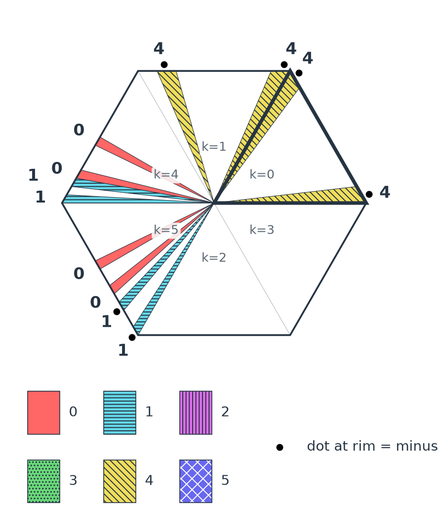
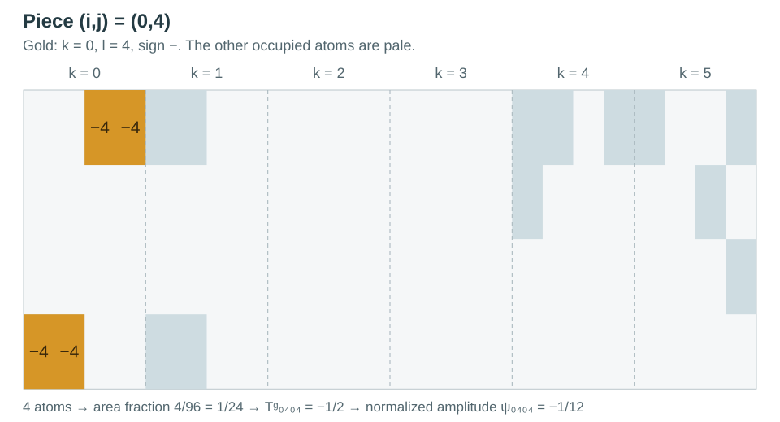
Why use a rectangle of width $\sqrt6$ and height $1$? A cell of its $24\times4$ grid has width $\sqrt6/24$ and height $1/4$. Its aspect ratio is $1/\sqrt6$: it is a miniature copy of the whole rectangle turned through a right angle. This is the small geometric fact that makes the self-similarity work.
In this rectangular placement 34 of the 36 base pieces are disconnected as closed sets. That is compatible with the definition used here: disconnected components retain their positions. A picture intended as a physical puzzle could use a transparent carrier for each whole piece.
3. a 96-atom alphabet: the strings and permutations
The long strings have a modest job: they specify where to put a finite list of atoms. A matching word $\tau=251340$ means $\tau(0)=2$, $\tau(1)=5$, $\tau(2)=1$, and so on. The atom goes into piece $(i,\tau(i))$ for each row $i$. A colour word $\sigma$ supplies $l=\sigma(i)$ in that placement. Both words are permutations of $0,\ldots,5$.
One target atom therefore appears in six pieces, once in each row and once in each column. The selected matchings also meet each designated diagonal exactly once. A colour belongs to the placement of an atom: the same target location can have different quantum colours in different pieces.
Equation (B1) in the companion manuscript gives these six words of matching numbers:
| sector $k$ | B1 word | equal-atom word used here |
|---|---|---|
| 0 | 23310102 | 2233331100110022 |
| 1 | 21303021 | 2211330033002211 |
| 2 | 32113020 | 3322111133002200 |
| 3 | 11302230 | 1111330022223300 |
| 4 | 7632321056014475 | 7632321056014475 |
| 5 | 6013617402535724 | 6013617402535724 |
Read an expanded word from left to right, placing its digits along the bottom row of the corresponding $4\times4$ sector block, then along the next row up. Position $t=0,\ldots,15$ in sector $k$ has coordinates
For sectors 4 and 5, each matching occurs twice. Use its first colour word on its first occurrence, and its second colour word on its second occurrence. For sectors 0–3 there is only one colour word for each matching. The sign is the sign of the corresponding entry of $T^{\rm g}$. It is provided by the seed, not by the matching number.
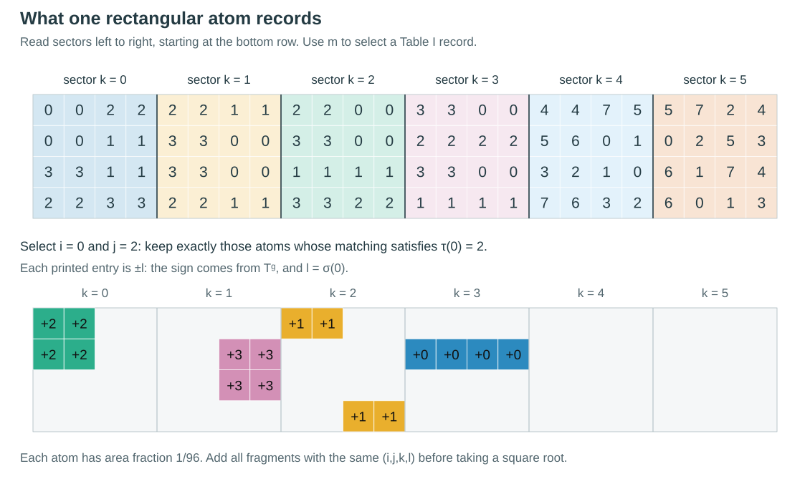
The complete Table I input: 32 records, 48 weighted transversals
The weight applies to each listed colour permutation. In sectors 0–3, one record accounts for four equal atoms. In sectors 4–5, each of its two colour words accounts for one atom. Leading zeroes are significant. These data, together with the B1 order and the seed signs, specify the whole base picture.
| $k$ | matching | $\tau$ | $\sigma_1$ | $\sigma_2$ | weight per $\sigma$ |
|---|---|---|---|---|---|
| 0 | 0 | 251340 | 253104 | – | 1/4 |
| 0 | 1 | 341205 | 243150 | – | 1/4 |
| 0 | 2 | 430215 | 423150 | – | 1/4 |
| 0 | 3 | 520341 | 523104 | – | 1/4 |
| 1 | 0 | 253014 | 350241 | – | 1/4 |
| 1 | 1 | 342051 | 340215 | – | 1/4 |
| 1 | 2 | 432150 | 430215 | – | 1/4 |
| 1 | 3 | 523104 | 530241 | – | 1/4 |
| 2 | 0 | 035142 | 314025 | – | 1/4 |
| 2 | 1 | 124035 | 315042 | – | 1/4 |
| 2 | 2 | 215043 | 134025 | – | 1/4 |
| 2 | 3 | 304125 | 135042 | – | 1/4 |
| 3 | 0 | 031452 | 201534 | – | 1/4 |
| 3 | 1 | 120534 | 201453 | – | 1/4 |
| 3 | 2 | 210453 | 021534 | – | 1/4 |
| 3 | 3 | 301524 | 021453 | – | 1/4 |
| 4 | 0 | 142530 | 415320 | 504321 | 1/16 |
| 4 | 1 | 145203 | 412503 | 502413 | 1/16 |
| 4 | 2 | 152403 | 415302 | 504312 | 1/16 |
| 4 | 3 | 154320 | 402531 | 512430 | 1/16 |
| 4 | 4 | 403512 | 054312 | 145302 | 1/16 |
| 4 | 5 | 405231 | 042531 | 152430 | 1/16 |
| 4 | 6 | 503421 | 054321 | 145320 | 1/16 |
| 4 | 7 | 504312 | 052413 | 142503 | 1/16 |
| 5 | 0 | 042513 | 415302 | 504312 | 1/16 |
| 5 | 1 | 045231 | 412530 | 502431 | 1/16 |
| 5 | 2 | 052431 | 415320 | 504321 | 1/16 |
| 5 | 3 | 054312 | 402513 | 512403 | 1/16 |
| 5 | 4 | 413520 | 054321 | 145320 | 1/16 |
| 5 | 5 | 415203 | 042513 | 152403 | 1/16 |
| 5 | 6 | 513402 | 054312 | 145302 | 1/16 |
| 5 | 7 | 514320 | 052431 | 142530 | 1/16 |
In formulas, the table is a decomposition of squared entries into coloured matchings:
It specifies magnitudes. The exact signs and all 152 nonzero coefficients can be inspected in the coefficient decoder below.
4. see complete rows, columns and diagonals assemble
The array below uses the same row and column orders as the companion construction:
The two displayed diagonals consist of $(i,D(i))$ and $(i,D'(i))$, where
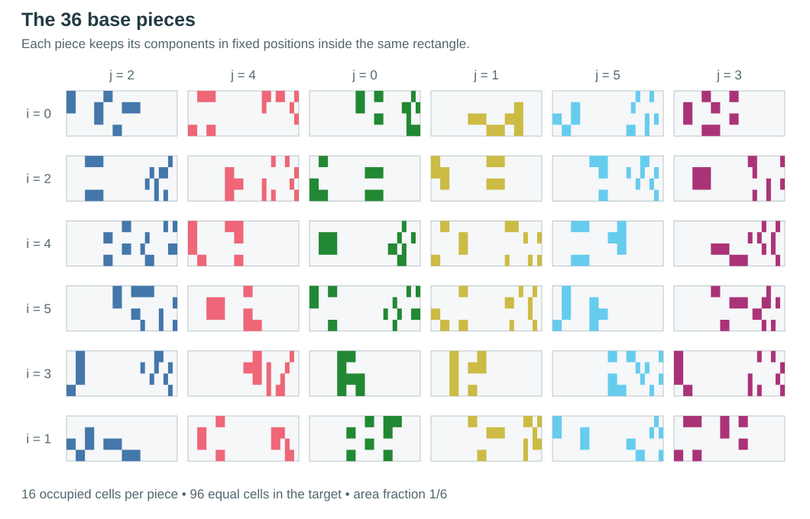
At depth one, six pieces containing 16 atoms each cover all $6\cdot16=96$ atoms, once each. At depth two, 36 pieces containing 256 atoms each cover all $36\cdot256=9216$ cells of a $96\times96$ grid. The tool counts occupied cells exactly. It does not estimate coverage from the rendered pixels.
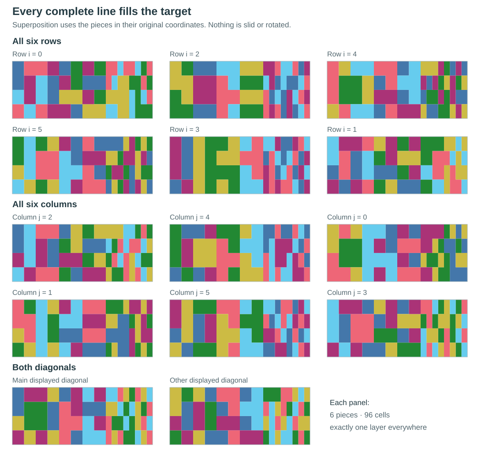
Which superposition fills the figure? One complete row, column or diagonal fills the target exactly once. Superimposing all $d^2$ pieces covers it $d$ times. A selection of attractive portraits generally does not form a tiling line.
5. one replacement rule, any depth
Choose an outer base piece $(i_1,j_1)$. Inside each of its 16 occupied cells place a smaller copy of a child piece $(i_2,j_2)$, always with the same clockwise quarter-turn. To go deeper, do the same thing to the child. Nothing needs to be redesigned as the depth increases.
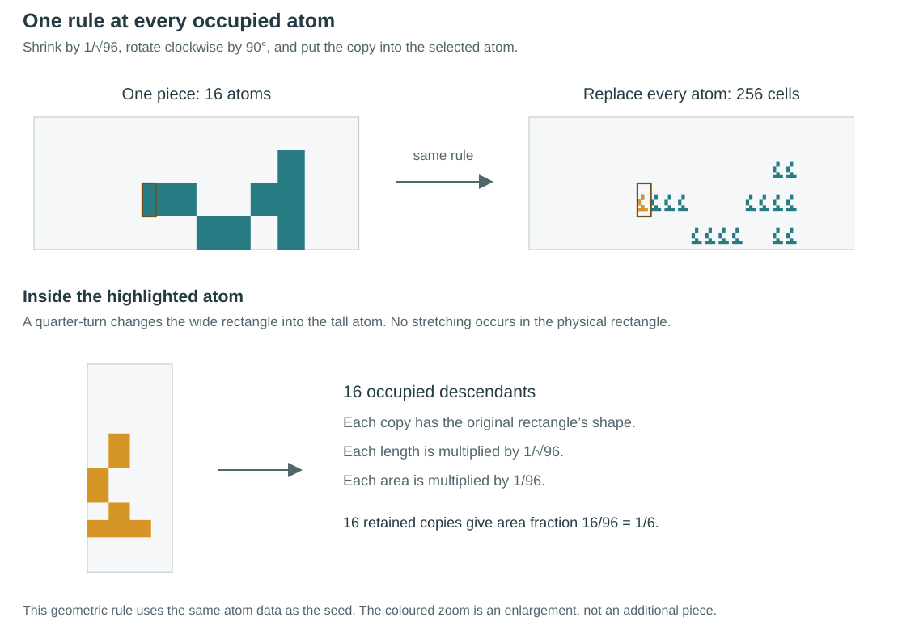
For $R=[0,\sqrt6]\times[0,1]$ and a grid cell $(a,b)$, the placement map is
It is a clockwise quarter-turn, uniform contraction and translation, with contraction ratio $r=1/\sqrt{96}$. The 96 possible images of the whole rectangle tile $R$. If $M_{ij}$ is the set of 16 occupied cells of piece $(i,j)$, the complete recursive definition is
where $I=(i_1,\ldots,i_n)$, $J=(j_1,\ldots,j_n)$ and primes remove the first digit. Every piece has $16^n$ equal atoms and occupies the fraction $(16/96)^n=6^{-n}$ of its target.
Why every depth is a genuine geomagic square
Tilings. Away from shared boundaries, a point in the target has one atom address at each level. That address selects a matching $\tau$ at each level. Their digitwise product is a permutation of the $6^n$ row and column words. It hits each row, column and designated product diagonal exactly once. Thus every one of the $2d+2$ required lines tiles the target, with $d=6^n$. For the displayed array use the lexicographic products of $R_0$ and $C_0$.
Equal areas. Each replacement retains 16 of 96 equal cells. Therefore all pieces have target-area fraction $1/d$, and a line contains exactly $d$ pieces.
Different shapes. The base masks have 144 distinct normalized images under the four axis-preserving reflection choices. This finite certificate is obtained by exact comparison. At any depth, horizontal boundary lengths are rational multiples of $\sqrt6$ and vertical boundary lengths are rational. A Euclidean congruence cannot interchange these directions. Rectilinear boundaries then leave only translations and axis-preserving reflections.
After translating a piece to normalize its bounding box, its coarse occupied cells recover its outer mask. Restricting to one occupied open cell, then taking closure, recovers the child up to congruence. The base certificate identifies the first pair of labels. Induction identifies the rest. All $d^2$ pieces are therefore pairwise noncongruent, including under reflection. This is a geometric statement, independent of the signs.
6. recover the state from the picture, and back
At depth $n$, read the row word $I$, column word $J$, sector word $K=(k_1,\ldots,k_n)$ and quantum-colour word $L=(l_1,\ldots,l_n)$. Each is an $n$-digit base-six word. Keep the complete label at every leaf. A single decorative colour cannot display all these digits at once.
Collect all fragments with the same complete label $(I,J,K,L)$. Let their total area, divided by the area of the whole target, be $\mu_{IJKL}$. Read their common sign $\varepsilon_{IJKL}$. Then
The first quantity is the two-unitary matrix entry, and the second is the coefficient of the normalized state. Empty regions give zero. Add fragment areas before taking the square root.
counting is enough
There are $96^n$ equal atoms in the target grid. If the chosen coefficient occupies $m$ of them, then
For example, $(i,j,k,l)=(0,4,0,4)$ has four negative atoms. Thus $\mu=4/96=1/24$, $U=-1/2$, and $\psi=-1/12$. A reader needs labels, counts and signs, but no ruler.
the reverse direction
For the product family, start from the seed coefficients and the stated matching decomposition. Distribute each squared magnitude among its assigned equal atoms, attach its sign and colour label, and put those atoms at the B1 grid positions. Recursively replace occupied cells according to (2), multiplying the base signs. This gives
With corresponding parties grouped, this is $|\psi_{\rm g}\rangle^{\otimes n}$. Tensor products preserve all three unitary flattenings [2].
The correspondence is exact once the placement conventions and sign rule are specified. The same matrix can admit many pictures, including the original hexagons and these rectangles. Conversely, an unlabelled silhouette loses the sector, colour and sign information and does not uniquely determine a quantum state. The explorers display complete labels numerically. The portrait figures deliberately show geometry alone.
From the geometric seed back to the sparse 60-entry seed
The geometric seed has 152 nonzero entries with squared magnitudes $1/2$, $1/4$ and $1/8$. It is related by local orthogonal rotations to a sparse seed with 60 nonzero entries. Set
For $U^{\rm g}_{6i+j,6k+l}=T^{\rm g}_{ijkl}$, the sparse matrix is
The state from that sparse matrix is locally equivalent to the geometric seed. These rotations can be performed exactly in the ring $\mathbb Q(\sqrt2)$.
7. squares are possible too
Apply the same horizontal rescaling to every piece and its target:
The common target becomes the unit square. Every relative area and every encoded coefficient is unchanged, and every complete line still fills its target. The rectangle is useful because one step is a similarity. In the square picture a single step is affine, but two steps together are again a similarity.
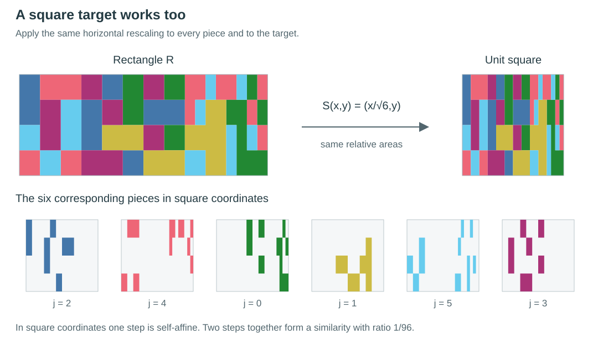
In normalized coordinates $z=(u,v)$, one step is
Two successive steps have the form $z\mapsto(\delta-z)/96$: a half-turn and a uniform contraction by $1/96$. Thus depth two has a $96\times96$ grid of genuinely square cells.
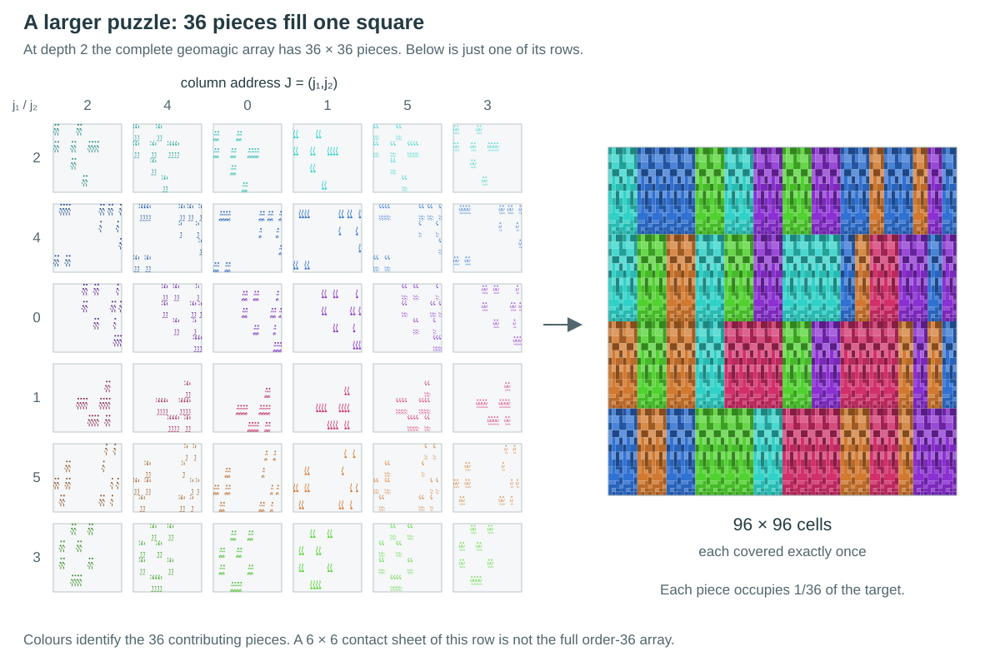
Pairwise noncongruence also holds for this particular square construction. It is checked separately: the base gives 288 distinct normalized images under the eight square symmetries. All 1,296 two-level pieces give 10,368. Recovering coarse cells in pairs of levels extends that certificate to every depth. A common affine map does not preserve noncongruence in general. The separate argument is needed here.
8. the conditional minus sign
The product family already gives infinitely many dimensions. There is also a simple way to change the states while leaving every occupied atom exactly where it is. When the sector digit at one level is $0$ and the row digit at the next level is $2$, multiply the coefficient by $-1$.
Square brackets denote an indicator: $[\text{statement}]$ is 1 when the statement is true and 0 otherwise. An extra minus toggles the old sign. It does not necessarily make the final sign negative.
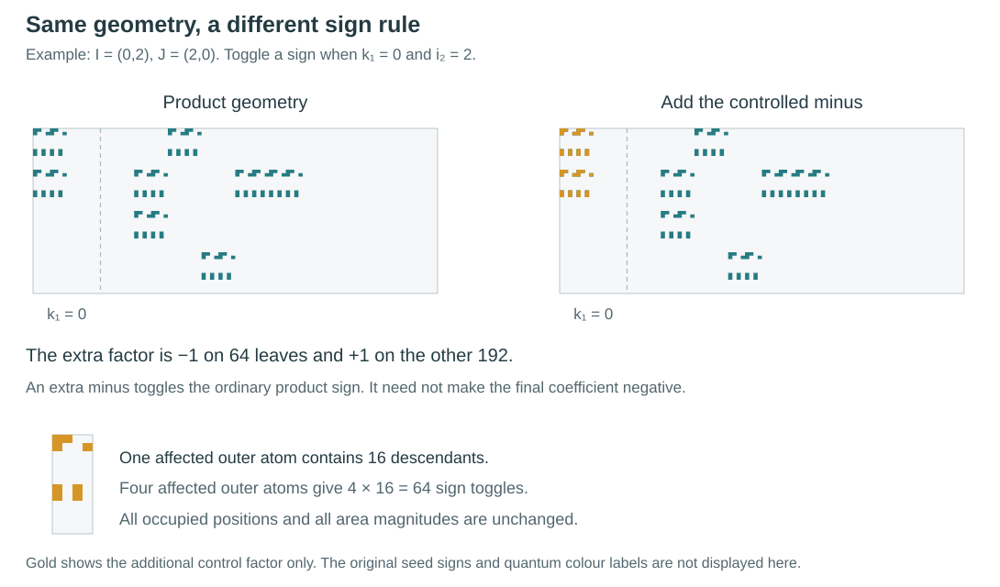
A concrete coefficient has $I=(0,2)$, $J=(2,0)$, $K=(0,0)$ and $L=(2,3)$. Its $4\cdot8=32$ fragments occupy $32/9216=1/288$ of the target. The product matrix entry is $1/(2\sqrt2)$, and the controlled entry is $-1/(2\sqrt2)$. The corresponding normalized state coefficient is $-1/(72\sqrt2)$. Its area is unchanged.
why the changed state is still AME
The operation is a controlled local sign on the child, selected by one outer party. It fits a useful general rule. Let $A$ be a two-unitary tensor and let every $B^{(x)}$ be two-unitary with the same inner dimension. Then
is two-unitary. In each bipartition the controlling index $k$ lies entirely on one side. After reordering indices, the matrix factors into the appropriate flattening of $A$ tensored with an identity, and a block-diagonal matrix whose blocks are flattenings of $B^{(k)}$. Both factors are unitary. Apply this rule repeatedly, using a local sign flip on the inner level $i=2$ when the outer $k=0$. This proves that every $|\Psi_n\rangle$ is a real AME$(4,6^n)$ state. An arbitrary control depending on two outer parties would need a new proof.
it is not just the same tensor power in another local basis
For every $n\ge2$, an exact invariant separates $|\Psi_n\rangle$ from the specified grouped seed power $|\psi_{\rm g}\rangle^{\otimes n}$, even allowing arbitrary local $U(6^n)$ changes of basis. At depth two the separating values are
This establishes a different local-unitary class from those seed powers. It does not establish that the controlled states are irreducible against every possible factorization into other AME states.
The exact all-depth certificate
For a normalized state, permute four copies locally and form
A permutation of copies commutes with $V^{\otimes4}$ for every local unitary $V$, so this scalar is locally unitary invariant. Grouping one seed-level contraction by its two control parities and two target parities gives the exact matrix
with labels $00,10,01,11$. More explicitly, for four ket index tuples $(a_t,b_t,c_t,d_t)$ the two bits are $s=([c_0=0]\mathbin\oplus[c_1=0],[c_2=0]\mathbin\oplus[c_3=0])$ and $e=([a_0=2]\mathbin\oplus[a_1=2],[a_2=2]\mathbin\oplus[a_3=2])$. The matrix is obtained by summing the 2,404 nonzero terms of this finite contraction exactly. The relevant control and sign projectors commute with the local rotations to $T^{\rm g}$.
The ordinary power has numerator $72^n$. Writing $v_n=(a_n,b_n,b_n,c_n)$ reduces the calculation to
The cone $a\ge b+2c$, $b,c\ge0$ is preserved: $b'=6(a-b-2c)\ge0$ and $a'-b'-2c'=18a+42b+48c\ge0$. Also $c_n>0$ and $72J_n-J_{n+1}=72b_n+24c_n>0$. Since $J_1=72$, this proves $0
9. the limit and its dimension
Choose one base label $(i,j)$ and repeat it at every level. This stationary address defines a compact attractor satisfying
There are 16 copies, each smaller by $1/\sqrt{96}$. The interiors of their containing cells are disjoint, so the open set condition holds. The classical Moran–Hutchinson formula [3], [4] determines the Hausdorff dimension $s$ from $16(1/\sqrt{96})^s=1$:
The number is greater than the dimension of a line and less than that of an area. It follows directly from the branching and scale factors. The dimension formula is classical, and the decimal value is not claimed to be a new mathematical constant. Other self-similar sets with 256 pieces scaled by $1/96$ have the same dimension when the open set condition holds.
For a more detailed portrait, open the exact depth-four drawing. It contains 65,536 atoms but covers only $1/1296$ of its target, so its whole-target appearance is naturally faint. The explorer's magnified-cell view makes the fine structure easier to inspect.

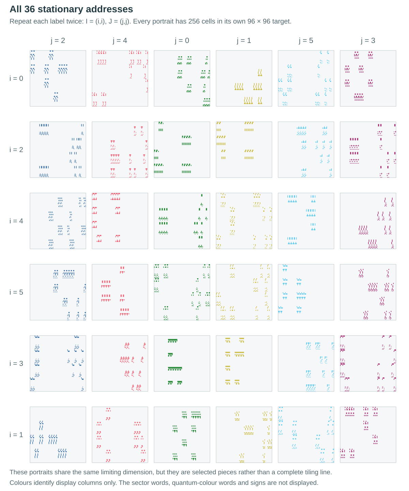
why a zero-area fractal can arise from complete finite puzzles
At finite depth, one piece has positive area fraction $6^{-n}$. A complete line has $6^n$ pieces, so its total is always 1. As $n$ increases, the pieces become smaller in area and the number needed for the assembly increases. The limit of one stationary piece has area zero. A fixed finite collection of such limits cannot tile a positive-area rectangle. These statements are consistent because the number of pieces in a finite complete line is not fixed as $n$ grows.
the dimension belongs to the geometric encoding
Subdivide every base atom into $t\times t$ equal subatoms, inheriting its labels and sign. Use the finer cells as the replacement maps. The base piece as a union of regions is unchanged, and the total area assigned to every coefficient at every finite depth is unchanged. But there are now $16t^2$ maps of ratio $1/(t\sqrt{96})$. Their stationary limit has dimension
For example $s_2=1.397792943\ldots$, and $s_t\to2$. Both quantum families therefore admit multiple fractal encodings with different dimensions. The Hausdorff dimension here is neither a quantum-state invariant nor a local-unitary invariant.
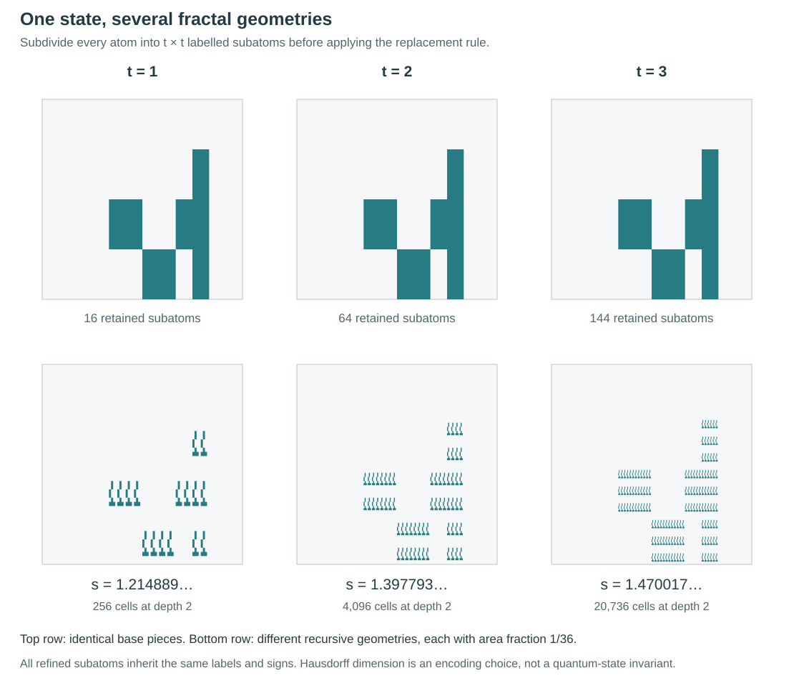
10. IFS, L-systems and classical fractal squares
an iterated function system
For a fixed $(i,j)$, the 16 maps in (8) form an iterated function system (IFS). Starting with the full target and repeatedly taking the union of its 16 images produces the displayed finite approximations and converges to its compact attractor. This is precisely the familiar IFS mechanism [4]. The particular masks supply the AME matching data.
a geometric L-system with very little memory
The same geometry can be described as a parallel replacement rule: replace every occupied symbol by the same 16-symbol pattern, with its scale and rotation. This is the connection with geometric L-systems [6]. A fixed repeated label gives one stationary rule, and an address with changing labels chooses a mask at each level.
The conditional sign rule needs only two bits of memory along an address: the preceding control bit $q$ and the accumulated sign $\varepsilon$. On reading a nonzero seed entry $(i,j,k,l)$, update
There are only four memory states. The digit $k$ determines the memory for the next level, while the previous memory determines whether the current sign is toggled. This gives a finite algorithm at every depth. No convergence of signs along an infinite address is assumed.
a deleted-digit fractal square
There is a direct connection with the classical class called fractal squares [5]. Let $K=S(F_{ij})$ be a square-normalized stationary attractor. Two steps are half-turn similarities with 256 translation digits. Four steps remove the remaining half-turn, giving the standard deleted-digit form
This means: retain a fixed selection of 65,536 cells in a $9216\times9216$ square grid, and repeat the same selection inside each retained cell. Grouping four existing steps only redescribes the same attractor. It differs from the finer-atom construction in (10), which changes the recursion. “Fractal square” does not imply connectedness or a carpet topology.
The exact digit sets
For two occupied base atoms $(a,b),(a',b')\in M_{ij}$, define
Then $K$ is the union of $(\delta-K)/96$ over $\delta\in\mathcal D$. The 256 vectors have coordinates in $\{1,\ldots,96\}$. Composing two such maps gives
Positional uniqueness gives 65,536 distinct digits in the stated range. This is a direct realization in the class studied by Lau, Luo and Rao, rather than a resemblance based only on pictures.
11. what generalizes, and what remains open
The existence of larger AME states by tensor products is standard. The content of this construction is the explicit connection to a fixed planar replacement rule, complete geomagic lines, pairwise noncongruent pieces and a recoverable signed state. The controlled family adds an exact all-depth distinction from the seed tensor powers.
The ingredients have relevant precedents: product constructions for AME states [2], classical similarity dimensions [3], [4], geometric replacement systems [6], and self-tiling tile sets [7]. Indexed constructions for quantum Latin structures provide further related context [8]. In particular, Construction 2.8 of [8] starts with outer classical orthogonal Latin squares. It is not a direct derivation of the present six-level seed construction. These connections explain the ingredients without identifying distinct results as the same theorem.
which other states might admit such pictures?
A useful sufficient starting point is a real two-unitary tensor $T$ corresponding to an AME$(4,d)$ state, whose squared entries admit a finite compatible coloured matching decomposition of the form used in Section 3, with rational weights and common designated diagonals. Refining to $N$ equal atoms per sector gives $dN$ target atoms and $N$ atoms in every piece. A $p\times q$ grid with $pq=dN$ and target aspect ratio $\sqrt{p/q}$ again makes each cell a quarter-turned similar copy. Its ratio is $1/\sqrt{dN}$, and the same digitwise construction gives tilings and product-state encodings at dimensions $d^n$.
For a stationary mask the similarity dimension, under this separated-cell construction, is $\log N/\log\sqrt{dN}$. To obtain a genuine geomagic square with pairwise noncongruent pieces, a suitable noncongruence and recovery argument must also be supplied. Neither a compatible matching decomposition with the required diagonals nor noncongruence follows automatically from the AME condition. Thus this is a constructive sufficient route, not a classification of all AME states.
The reverse question also has a boundary: a geomagic arrangement determines coverage and areas, but suitable phase or sign information is still required to make all three flattenings unitary. Arbitrary geomagic puzzles need not define AME states. In the present example the exact seed and the one-index control lemma provide the missing quantum guarantee.
| Established here | Further questions |
|---|---|
| Real AME$(4,6^n)$ states at every finite depth, for both sign rules. | Which other seeds admit equally simple compatible matching data? |
| Complete line tilings and pairwise noncongruent pieces, in rectangle and square coordinates. | Which additional constraints give connected pieces or connected attractors? |
| The controlled family differs from the specified seed powers under arbitrary local unitaries. | Can these states factor into other AME building blocks? |
| A classical IFS dimension and a direct fractal-square description. | What topological differences occur among the 36 stationary attractors? |
12. references and related reading
- W. Bruzda, Geomagic Square Representation of a Real AME$(4,6)$ State, companion manuscript, version of 9 October 2026, Table I and Appendix B. Repository and geometric seed and its decoding.
- Y. Shen and L. Chen, Absolutely maximally entangled states in tripartite heterogeneous systems, arXiv:2001.08821, Section II (grouped tensor-product construction).
- P. A. P. Moran, “Additive functions of intervals and Hausdorff measure,” Proceedings of the Cambridge Philosophical Society 42, 15–23 (1946).
- J. E. Hutchinson, “Fractals and self similarity,” Indiana University Mathematics Journal 30, 713–747 (1981). Author-hosted paper.
- K.-S. Lau, J. J. Luo and H. Rao, “Topological structure of fractal squares,” Mathematical Proceedings of the Cambridge Philosophical Society 155, 73–86 (2013), arXiv:1206.4826.
- P. Prusinkiewicz and A. Lindenmayer, The Algorithmic Beauty of Plants (Springer, 1990), Chapters 1 and 8. Author-hosted book.
- L. Sallows, “On self-tiling tile sets,” Mathematics Magazine 85, 323–333 (2012).
- M. Lv, Y. Zhang and H. Cao, Orthogonal Quantum Latin Squares with Maximal Cardinality from Full-Rank Factorizations, arXiv:2609.29070, Construction 2.8 (related indexed construction with classical outer Latin squares).